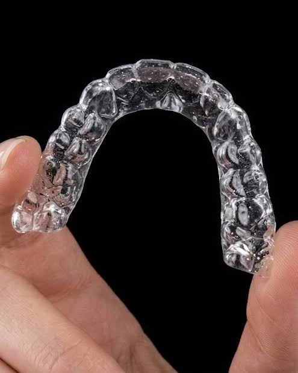
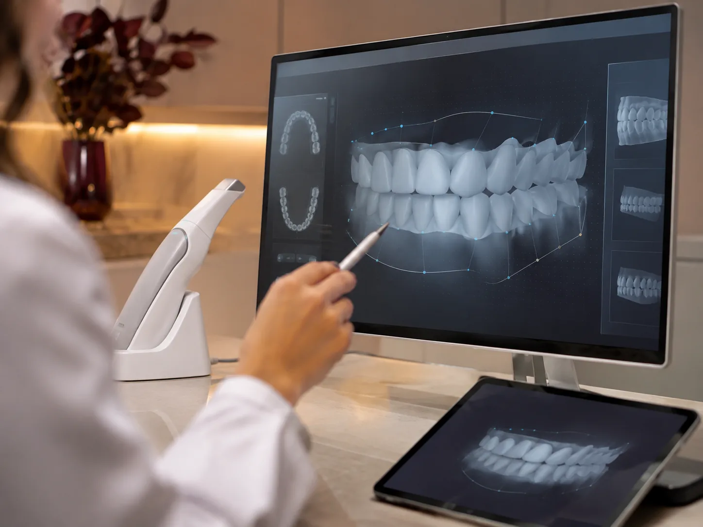

Transparentes e discretos
Praticamente imperceptíveis durante o dia a dia.
Um sorriso bonito e alinhado transforma não apenas a estética, mas também a confiança e a maneira como você se relaciona com o mundo.

O Invisalign é um sistema de tratamento ortodôntico que utiliza alinhadores transparentes, removíveis e personalizados para movimentar os dentes gradualmente, proporcionando mais discrição e conforto durante o tratamento.
Diferentemente dos aparelhos convencionais, os alinhadores são praticamente imperceptíveis e podem ser retirados para as refeições e para a higienização dos dentes.
Agendar avaliaçãoDo primeiro exame ao sorriso planejado, cada etapa é acompanhada pelo seu dentista.
Análise detalhada do posicionamento dos dentes, da mordida e das necessidades individuais de cada paciente.
Obtemos um modelo tridimensional da arcada dentária, sem a necessidade de moldagens tradicionais.
As movimentações dentárias são planejadas digitalmente, permitindo visualizar as etapas e estimar o resultado final.
Confeccionados para você e trocados periodicamente, conforme a orientação do dentista, até o posicionamento planejado.
Uso diário: 20 a 22 horas por dia. Os alinhadores são retirados apenas para comer, beber líquidos que não sejam água e realizar a higiene oral.
Praticamente imperceptíveis durante o dia a dia.
Sem fios ou bráquetes metálicos.
Facilitam a alimentação e a higiene bucal.
Individualizado para as características do seu sorriso.
Possibilidade de visualizar o tratamento antes de começar.
O tempo varia de acordo com a complexidade de cada caso, a quantidade de movimentações necessárias e a colaboração do paciente.
O uso correto dos alinhadores e o comparecimento às consultas de acompanhamento são fundamentais para alcançar os resultados planejados.

Cada sorriso tem suas particularidades. Por isso, o tratamento começa com uma avaliação criteriosa e um planejamento digital individualizado, respeitando as características e necessidades de cada paciente.
Agendar avaliaçãoAmbiente extremamente acolhedor e agradável! A Dra. Evelin é uma excelente profissional e está sempre modernizando a infraestrutura da clínica. Além do atendimento impecável, vale muito a pena.
Ótimas profissionais, excelente atendimento e muito bom ambiente. Super recomendo.
Recomendo muito fui muito bem tratada fiz implante todos elogiam muito amei Dra Evelyn maravilhosa show
Foi maravilhoso as meninas são incríveis eu gosto muito me sinto muito bem são simpáticas
Ótimo atendimento! Trabalho de excelência. Organização. Tradição e modernidade, entregam um atendimento seguro e moderno.
Faço tratamento dentário há 25 anos. Profissionais competentes naquilo que fazem.
Excelentes profissionais, excelentes pessoas, anos de tratamento, amigas!
Descubra se o Invisalign é indicado para você.
VM Odontologia Personalizada